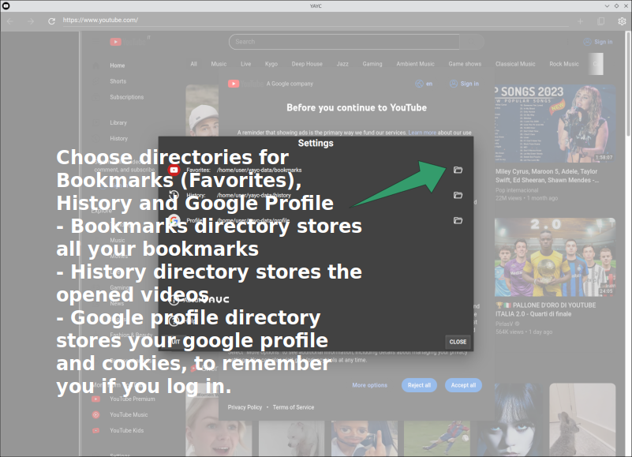

Alright, you’ve got yayc in one way or another! Now just launch it, open the settings to specify the working directories where to save the history, bookmarks and chromium profile, and then you are good to go!
YAYC stores bookmarks as one file per video, and categories as subdirectories. This is a simple, efficient and portable way that also allows easy backup as well as processing through 3rd party tools.
Below some screens illustrating the process
Note that:
